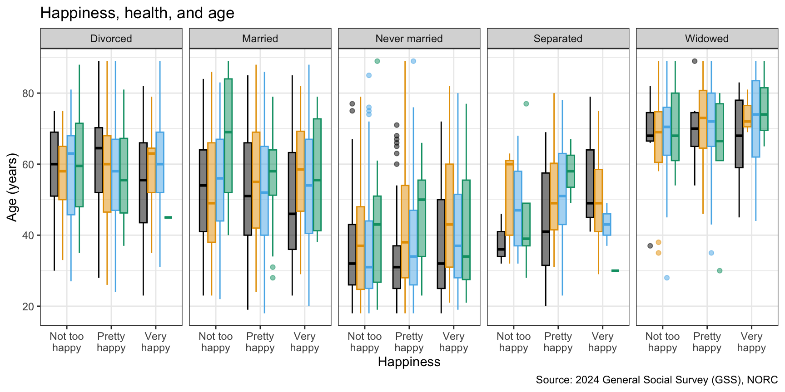

Grammar of data transformation
Lecture 4
Duke University
STA 199 - Fall 2026
September 2, 2026
Warm up
While you wait: Participate 📱
Which of the following is true about the code below?
mtcarsis the name of the variable being plotted on the x-axis- The function that goes in the blank is
map() - The data are being visualized with a scatterplot and a smooth line
- Some points on the plot will be colored differently than others
Go to wooclap.com and use the code LISGDPO.
Announcements
Following along with code along videos: See https://sta199-f26.github.io/computing-code-alongs.html
Lab 1 is tomorrow, HW 1 is due next Wednesday
No class on Monday, September 7 (Labor Day)
From last time
Let’s get laptops out!
If you were here on Monday and worked on ae-01:
Go to Positron and open your
aeproject.Open
ae-01-gss-dataviz.qmdin Positron and pick up where we left off.
If you’re new here and didn’t work on ae-01:
Go to the course GitHub organization and clone
ae-YOUR-GITHUB-NAMErepo to your Positron session in your container.Open
ae-01-gss-dataviz.qmdin Positron and follow the instructions to complete the application exercise.
Start with the question
| Question | Variables | A useful first plot |
|---|---|---|
| What values are common? | One categorical | Bar chart |
| What is the distribution? | One numerical | Histogram or boxplot |
| Do groups differ? | Numerical + categorical | Boxplot or histogram by group |
| Are two categorical variables associated? | Two categorical | Filled or dodged bar chart |
| Are two numerical variables associated? | Two numerical | Scatterplot |
Interesting Qs <-> many variables
Bring the third, fourth, fifth, etc. variable to the plot using additional aesthetics such as color, shape, size, linewidth, etc. and/or with faceting (creating small multiple plots based on the levels of a variable):

A short list
(for now)
of R essentials
Packages
- Installed with
install.packages(), once per system:
Note
We already pre-installed many of the package you’ll need for this course, so you might go the whole semester without needing to run install.packages()!
tidyverse
aka the package you’ll hear about the most…

- The tidyverse is an opinionated collection of R packages designed for data science
- All packages share an underlying philosophy and a common grammar
Data frames and variables
- Each row of a data frame is an observation
- Each column of a data frame is a variable
gss data frame
# A tibble: 3,294 × 9
year marital_status age education_years children happiness health
<dbl> <chr> <dbl> <dbl> <dbl> <chr> <chr>
1 2024 Never married 33 16 2 Not too happy Good
2 2024 Never married 64 16 0 Pretty happy Good
3 2024 Married 69 14 0 Pretty happy Good
4 2024 Never married 19 12 0 Pretty happy Good
5 2024 Divorced 70 13 3 Not too happy Good
6 2024 Married 53 14 2 Pretty happy Good
7 2024 Married 48 13 6 Pretty happy Good
8 2024 Divorced 30 14 1 Not too happy Good
9 2024 Married 60 14 2 Very happy Good
10 2024 Never married 25 12 0 Pretty happy Good
# ℹ 3,284 more rows
# ℹ 2 more variables: employment_status <chr>, party_id <chr>health variable
[1] "Good" "Good" "Good" "Good" "Good" "Good"
[7] "Good" "Good" "Good" "Good" "Good" "Excellent"
[13] "Fair" "Good" "Fair" "Excellent" "Good" "Good"
[19] "Good" "Good" "Good" "Excellent" "Good" "Good"
[25] "Good" "Good" "Good" "Good" "Good" "Good"
[31] "Good" "Good" "Excellent" "Fair" "Good" "Good"
[37] "Excellent" "Good" "Good" "Good" "Fair" "Good"
[43] "Good" "Good" "Poor" "Good" "Excellent" "Good"
[49] "Excellent" "Good" "Good" "Good" "Good" "Good"
[55] "Poor" "Fair" "Good" "Good" "Fair" "Fair"
[61] "Good" "Good" "Poor" "Excellent" "Excellent" "Fair"
[67] "Good" "Good" "Excellent" "Good" "Good" "Fair"
[73] "Good" "Fair" "Good" "Excellent" "Good" "Excellent"
[79] "Good" "Good" "Good" "Good" "Fair" "Fair"
[85] "Fair" "Fair" "Good" "Good" "Good" "Excellent"
[91] "Excellent" "Fair" "Good" "Excellent" "Good" "Good"
[97] "Good" "Excellent" "Fair" "Good" "Good" "Excellent"
[103] "Fair" "Good" "Fair" "Good" "Good" "Good"
[109] "Good" "Fair" "Good" "Good" "Fair" "Good"
[115] "Poor" "Good" "Fair" "Fair" "Excellent" "Good"
[121] "Good" "Fair" "Excellent" "Good" "Fair" "Fair"
[127] "Excellent" "Fair" "Excellent" "Fair" "Good" "Fair"
[133] "Good" "Fair" "Good" "Good" "Good" "Good"
[139] "Good" "Good" "Excellent" "Good" "Good" "Good"
[145] "Good" "Fair" "Excellent" "Good" "Good" "Good"
[151] "Good" "Fair" "Good" "Excellent" "Good" "Good"
[157] "Good" "Good" "Good" "Good" "Excellent" "Good"
[163] "Excellent" "Good" "Excellent" "Good" "Good" "Good"
[169] "Good" "Excellent" "Fair" "Poor" "Good" "Good"
[175] "Excellent" "Good" "Fair" "Fair" "Good" "Fair"
[181] "Fair" "Good" "Good" "Excellent" "Excellent" "Fair"
[187] "Good" "Excellent" "Good" "Fair" "Good" "Good"
[193] "Fair" "Excellent" "Fair" "Poor" "Fair" "Good"
[199] "Fair" "Fair" "Good" "Good" "Good" "Good"
[205] "Excellent" "Poor" "Excellent" "Good" "Good" "Good"
[211] "Good" "Good" "Good" "Fair" "Fair" "Fair"
[217] "Fair" "Good" "Good" "Good" "Good" "Good"
[223] "Good" "Fair" "Good" "Good" "Good" "Good"
[229] "Poor" "Good" "Good" "Excellent" "Good" "Fair"
[235] "Good" "Fair" "Good" "Good" "Good" "Fair"
[241] "Good" "Good" "Good" "Fair" "Fair" "Good"
[247] "Good" "Fair" "Poor" "Good" "Poor" "Fair"
[253] "Excellent" "Fair" "Excellent" "Fair" "Poor" "Good"
[259] "Good" "Good" "Excellent" "Good" "Good" "Fair"
[265] "Good" "Good" "Fair" "Good" "Good" "Fair"
[271] "Fair" "Good" "Fair" "Fair" "Fair" "Fair"
[277] "Fair" "Good" "Good" "Good" "Excellent" "Good"
[283] "Good" "Poor" "Good" "Excellent" "Good" "Good"
[289] "Excellent" "Good" "Good" "Good" "Good" "Good"
[295] "Good" "Good" "Good" "Good" "Excellent" "Excellent"
[301] "Good" "Fair" "Good" "Excellent" "Poor" "Good"
[307] "Good" "Good" "Good" "Poor" "Good" "Fair"
[313] "Fair" "Excellent" "Good" "Fair" "Good" "Fair"
[319] "Fair" "Fair" "Fair" "Good" "Good" "Good"
[325] "Good" "Fair" "Good" "Fair" "Poor" "Excellent"
[331] "Excellent" "Good" "Fair" "Good" "Fair" "Good"
[337] "Excellent" "Good" "Fair" "Good" "Good" "Good"
[343] "Fair" "Excellent" "Excellent" "Fair" "Good" "Good"
[349] "Fair" "Good" "Good" "Good" "Good" "Good"
[355] "Good" "Good" "Excellent" "Excellent" "Good" "Fair"
[361] "Good" "Excellent" "Good" "Fair" "Poor" "Good"
[367] "Fair" "Excellent" "Fair" "Fair" "Good" "Good"
[373] "Good" "Good" "Good" "Good" "Good" "Fair"
[379] "Fair" "Fair" "Excellent" "Good" "Good" "Excellent"
[385] "Good" "Good" "Poor" "Good" "Fair" "Fair"
[391] "Good" "Good" "Excellent" "Fair" "Good" "Fair"
[397] "Good" "Fair" "Good" "Excellent" "Good" "Poor"
[403] "Good" "Excellent" "Good" "Good" "Good" "Good"
[409] "Good" "Fair" "Excellent" "Good" "Fair" "Fair"
[415] "Good" "Good" "Good" "Fair" "Excellent" "Good"
[421] "Good" "Fair" "Good" "Good" "Good" "Fair"
[427] "Good" "Good" "Good" "Good" "Fair" "Excellent"
[433] "Excellent" "Excellent" "Fair" "Good" "Fair" "Fair"
[439] "Good" "Excellent" "Excellent" "Good" "Fair" "Good"
[445] "Good" "Fair" "Good" "Excellent" "Good" "Good"
[451] "Good" "Excellent" "Excellent" "Good" "Good" "Good"
[457] "Good" "Good" "Fair" "Excellent" "Fair" "Fair"
[463] "Fair" "Good" "Excellent" "Fair" "Good" "Good"
[469] "Good" "Fair" "Good" "Fair" "Good" "Poor"
[475] "Excellent" "Good" "Excellent" "Excellent" "Fair" "Excellent"
[481] "Good" "Excellent" "Good" "Fair" "Excellent" "Excellent"
[487] "Excellent" "Fair" "Excellent" "Excellent" "Fair" "Excellent"
[493] "Good" "Good" "Good" "Good" "Fair" "Good"
[499] "Poor" "Fair" NA "Excellent" "Good" "Poor"
[505] NA "Fair" "Good" "Excellent" "Good" "Poor"
[511] "Fair" "Good" "Good" "Good" "Good" "Fair"
[517] "Good" NA "Good" "Good" "Good" "Excellent"
[523] "Good" "Excellent" "Good" "Good" "Good" "Good"
[529] "Good" "Good" "Good" "Good" "Excellent" "Good"
[535] "Good" "Good" "Excellent" "Excellent" "Good" "Good"
[541] "Good" "Fair" "Good" "Excellent" "Fair" "Good"
[547] "Excellent" "Good" "Good" "Fair" "Good" "Excellent"
[553] "Excellent" "Fair" "Excellent" "Fair" "Excellent" "Good"
[559] "Good" "Good" "Fair" "Good" "Good" "Good"
[565] "Good" "Good" "Fair" "Good" "Excellent" "Excellent"
[571] "Good" "Good" "Poor" "Good" "Poor" "Good"
[577] "Excellent" "Fair" "Good" "Fair" "Good" "Fair"
[583] "Fair" "Poor" "Good" "Poor" "Good" "Fair"
[589] "Good" "Good" "Good" "Good" "Fair" "Fair"
[595] "Fair" "Poor" "Poor" "Fair" "Fair" "Good"
[601] "Fair" "Excellent" "Excellent" "Good" "Fair" "Good"
[607] "Excellent" "Good" "Good" "Good" "Excellent" "Good"
[613] "Good" "Good" "Good" "Excellent" "Fair" "Fair"
[619] "Good" "Good" "Excellent" "Good" "Fair" "Good"
[625] "Excellent" "Good" "Good" "Good" "Fair" "Good"
[631] "Fair" "Good" "Excellent" "Good" "Fair" "Fair"
[637] "Good" "Good" "Good" "Fair" "Excellent" "Fair"
[643] "Good" "Fair" "Fair" "Fair" "Excellent" "Excellent"
[649] "Good" "Good" "Good" "Good" "Fair" "Good"
[655] "Fair" "Fair" "Fair" "Good" "Fair" "Excellent"
[661] "Fair" "Good" "Good" "Good" "Good" "Good"
[667] "Good" "Good" "Fair" "Excellent" "Good" "Fair"
[673] "Excellent" "Good" "Good" "Good" "Excellent" "Excellent"
[679] "Excellent" "Good" "Fair" "Excellent" "Excellent" "Good"
[685] "Good" "Excellent" "Fair" "Good" "Good" "Excellent"
[691] "Excellent" "Good" "Fair" "Good" "Good" "Fair"
[697] "Good" "Excellent" "Fair" "Good" "Good" "Good"
[703] "Good" "Fair" "Good" "Fair" "Excellent" "Fair"
[709] "Fair" "Fair" "Good" "Fair" "Poor" "Good"
[715] "Poor" "Good" "Excellent" "Good" "Fair" "Fair"
[721] NA "Fair" "Good" "Poor" "Good" "Good"
[727] "Poor" "Fair" "Excellent" "Good" "Fair" "Good"
[733] "Excellent" "Fair" "Good" "Fair" "Fair" "Fair"
[739] "Good" "Good" "Good" "Excellent" "Good" "Good"
[745] "Fair" "Fair" "Good" "Excellent" "Excellent" "Fair"
[751] "Good" "Good" "Good" "Good" "Good" "Good"
[757] "Fair" "Good" "Good" "Excellent" "Good" "Good"
[763] "Fair" "Fair" "Fair" "Good" "Good" "Fair"
[769] "Good" "Fair" "Excellent" "Fair" "Good" "Poor"
[775] "Good" "Good" "Good" "Fair" "Good" "Fair"
[781] "Fair" "Good" "Good" "Excellent" "Excellent" "Good"
[787] "Good" "Fair" "Good" "Excellent" "Good" "Fair"
[793] "Good" "Good" "Good" "Excellent" "Excellent" "Excellent"
[799] "Good" "Good" "Poor" "Good" "Fair" "Good"
[805] "Excellent" "Good" "Fair" "Fair" "Good" "Fair"
[811] "Fair" "Good" "Good" "Excellent" "Excellent" "Good"
[817] "Excellent" "Good" "Fair" "Fair" "Excellent" "Fair"
[823] "Excellent" "Fair" "Good" "Good" "Good" "Fair"
[829] "Good" "Good" "Poor" "Fair" "Good" "Fair"
[835] "Fair" "Excellent" "Fair" "Fair" "Fair" "Good"
[841] "Fair" "Good" "Good" "Excellent" "Good" "Good"
[847] "Good" "Excellent" "Good" "Good" "Excellent" "Good"
[853] "Excellent" "Fair" "Fair" "Fair" "Excellent" "Excellent"
[859] "Good" "Fair" "Excellent" "Excellent" "Fair" "Good"
[865] "Good" "Good" "Poor" "Good" "Good" "Excellent"
[871] "Good" "Good" "Fair" "Good" "Excellent" "Good"
[877] "Good" "Good" "Good" "Good" "Good" "Good"
[883] "Good" "Good" "Fair" "Fair" "Fair" "Good"
[889] "Poor" "Good" "Fair" "Good" "Fair" "Poor"
[895] "Fair" "Good" "Good" "Good" "Fair" "Fair"
[901] "Good" "Good" "Good" "Excellent" "Good" "Good"
[907] "Excellent" "Good" "Good" "Fair" "Good" "Fair"
[913] "Excellent" "Good" "Excellent" "Good" "Good" "Good"
[919] "Good" "Good" "Excellent" "Good" "Excellent" "Good"
[925] "Good" "Good" "Good" "Good" "Excellent" "Fair"
[931] "Fair" "Excellent" "Good" "Excellent" "Good" "Good"
[937] "Good" "Good" "Good" "Excellent" "Excellent" "Fair"
[943] "Good" "Excellent" "Good" "Good" "Good" "Good"
[949] "Good" "Good" "Good" "Excellent" "Good" "Good"
[955] "Excellent" "Good" "Excellent" "Excellent" "Good" "Fair"
[961] "Good" "Good" "Good" "Excellent" "Good" "Excellent"
[967] "Good" "Good" "Excellent" "Good" "Fair" "Fair"
[973] "Good" "Fair" "Good" "Fair" "Excellent" "Excellent"
[979] "Good" "Good" "Excellent" "Fair" "Fair" "Good"
[985] "Good" "Good" "Excellent" "Excellent" "Good" "Good"
[991] "Fair" "Excellent" "Good" "Excellent" "Good" "Good"
[997] "Good" "Fair" "Good" "Excellent" "Excellent" "Good"
[1003] "Fair" "Good" "Fair" "Fair" "Good" "Good"
[1009] "Fair" "Poor" "Good" "Excellent" "Good" "Good"
[1015] "Good" "Fair" "Good" "Excellent" "Fair" "Good"
[1021] "Good" "Good" "Fair" "Good" "Fair" "Good"
[1027] "Good" "Good" "Good" "Good" "Good" "Fair"
[1033] "Good" "Good" "Fair" "Poor" "Good" "Good"
[1039] "Good" "Fair" "Fair" "Good" "Good" "Fair"
[1045] "Good" "Fair" "Excellent" "Good" "Good" "Fair"
[1051] "Fair" "Excellent" "Good" "Good" "Good" "Fair"
[1057] "Fair" "Excellent" "Good" "Good" "Excellent" "Excellent"
[1063] "Excellent" "Good" "Good" "Good" "Good" "Excellent"
[1069] "Excellent" "Excellent" "Good" "Fair" "Good" "Poor"
[1075] "Good" "Good" "Good" "Fair" "Poor" "Excellent"
[1081] "Excellent" "Good" "Good" "Excellent" "Good" "Good"
[1087] "Good" "Good" "Fair" "Fair" "Good" "Fair"
[1093] "Fair" "Good" "Good" "Good" "Fair" "Excellent"
[1099] "Good" "Good" "Good" "Fair" "Poor" "Good"
[1105] "Fair" "Fair" "Poor" "Fair" "Excellent" "Good"
[1111] "Fair" "Fair" "Good" "Good" "Good" "Good"
[1117] "Good" "Good" "Good" "Good" "Fair" "Good"
[1123] "Excellent" "Good" "Good" "Good" "Excellent" "Fair"
[1129] "Fair" "Excellent" "Good" "Good" "Fair" "Excellent"
[1135] "Fair" "Excellent" "Good" "Good" "Poor" "Good"
[1141] "Good" "Fair" "Good" "Poor" "Good" "Fair"
[1147] "Good" "Excellent" "Good" "Good" "Fair" "Fair"
[1153] "Fair" "Fair" "Good" "Good" "Good" "Excellent"
[1159] "Excellent" "Poor" "Fair" "Good" "Excellent" "Good"
[1165] "Fair" "Good" "Fair" "Good" "Good" "Good"
[1171] "Good" "Excellent" "Good" "Fair" "Good" "Good"
[1177] "Excellent" "Good" "Excellent" "Fair" "Fair" "Good"
[1183] "Good" "Excellent" "Good" "Excellent" "Excellent" "Good"
[1189] "Good" "Good" "Excellent" "Good" "Excellent" "Excellent"
[1195] "Good" "Excellent" "Good" "Good" "Fair" "Good"
[1201] "Good" "Excellent" "Good" "Good" "Fair" "Fair"
[1207] "Fair" "Good" "Good" "Good" "Excellent" "Good"
[1213] "Good" "Poor" "Good" "Good" "Good" "Fair"
[1219] "Good" "Excellent" "Good" "Fair" "Good" "Good"
[1225] "Good" "Excellent" "Good" "Good" "Good" "Fair"
[1231] "Fair" "Good" "Good" "Good" "Good" "Excellent"
[1237] "Excellent" "Good" "Good" "Excellent" "Good" "Good"
[1243] "Good" "Good" "Fair" "Poor" "Excellent" "Excellent"
[1249] "Good" "Good" "Excellent" "Good" "Good" "Good"
[1255] "Fair" "Good" "Excellent" "Excellent" "Good" "Poor"
[1261] "Good" "Excellent" "Fair" "Good" "Fair" "Fair"
[1267] "Good" "Good" "Good" "Fair" "Excellent" "Good"
[1273] "Excellent" "Excellent" "Fair" "Excellent" "Fair" "Good"
[1279] "Fair" "Excellent" "Excellent" "Fair" "Excellent" "Good"
[1285] "Good" "Good" "Excellent" NA "Good" "Good"
[1291] "Excellent" "Good" "Fair" "Excellent" "Good" "Good"
[1297] "Good" "Good" "Excellent" "Fair" "Excellent" "Good"
[1303] "Excellent" "Good" "Excellent" "Fair" "Good" "Excellent"
[1309] "Fair" "Good" "Excellent" NA "Good" "Good"
[1315] "Good" "Excellent" "Good" "Good" "Good" "Excellent"
[1321] "Good" "Good" "Excellent" "Good" "Good" "Fair"
[1327] "Good" "Good" "Fair" "Good" "Good" "Fair"
[1333] "Excellent" "Good" "Fair" "Excellent" "Good" "Good"
[1339] "Fair" "Excellent" "Excellent" "Good" "Fair" "Good"
[1345] "Excellent" "Good" "Excellent" "Excellent" "Poor" "Good"
[1351] "Fair" "Good" "Good" "Excellent" "Excellent" "Good"
[1357] "Good" "Fair" "Excellent" "Good" "Excellent" "Good"
[1363] "Good" "Fair" "Good" "Good" "Good" "Good"
[1369] "Good" "Good" "Good" "Good" "Excellent" "Excellent"
[1375] "Good" "Excellent" "Fair" "Good" "Good" "Fair"
[1381] "Excellent" "Excellent" "Good" "Fair" "Fair" "Good"
[1387] "Good" "Excellent" "Good" "Fair" "Good" "Good"
[1393] "Good" "Good" "Good" "Excellent" "Fair" "Poor"
[1399] "Good" "Fair" "Fair" "Good" "Fair" "Excellent"
[1405] "Fair" "Fair" "Excellent" "Fair" "Good" "Excellent"
[1411] "Good" "Good" "Good" "Poor" "Good" "Excellent"
[1417] "Good" "Good" "Excellent" "Good" "Good" "Good"
[1423] "Good" "Good" "Fair" "Excellent" "Excellent" "Fair"
[1429] "Poor" "Good" "Good" "Good" "Good" "Good"
[1435] "Excellent" "Fair" "Good" "Good" "Good" "Good"
[1441] "Excellent" "Good" "Good" "Poor" "Good" "Good"
[1447] "Good" "Fair" "Good" NA "Good" "Good"
[1453] "Good" "Good" "Good" "Excellent" "Good" "Good"
[1459] "Good" "Excellent" "Good" "Excellent" "Good" "Good"
[1465] "Good" "Good" "Good" "Good" "Good" "Good"
[1471] "Good" "Poor" "Good" "Good" "Good" "Good"
[1477] "Good" "Good" "Good" "Good" "Good" "Good"
[1483] "Good" "Good" "Good" "Excellent" "Good" "Fair"
[1489] "Fair" "Good" "Good" "Good" "Fair" "Excellent"
[1495] "Fair" "Good" "Good" "Fair" "Good" "Good"
[1501] "Fair" "Good" "Fair" "Good" "Excellent" "Good"
[1507] "Good" "Good" "Excellent" "Excellent" "Good" "Fair"
[1513] "Excellent" "Good" "Good" "Good" "Good" "Good"
[1519] "Poor" "Good" "Fair" "Good" "Good" "Excellent"
[1525] "Good" "Good" "Fair" "Fair" "Good" "Good"
[1531] "Good" "Fair" "Excellent" "Fair" "Good" "Good"
[1537] "Good" "Good" "Fair" "Good" "Good" "Excellent"
[1543] "Fair" "Good" "Fair" "Good" "Good" "Good"
[1549] "Excellent" "Good" "Good" "Excellent" "Good" "Excellent"
[1555] "Good" "Excellent" "Fair" "Good" "Good" "Good"
[1561] "Fair" "Good" "Poor" "Good" "Good" "Fair"
[1567] "Fair" "Poor" "Fair" "Fair" "Good" "Excellent"
[1573] "Good" "Good" "Fair" "Good" "Excellent" NA
[1579] "Good" "Poor" "Good" "Good" "Good" "Fair"
[1585] "Good" "Fair" "Fair" "Good" "Good" "Excellent"
[1591] "Good" "Good" "Excellent" "Good" "Excellent" "Good"
[1597] "Good" "Fair" "Good" "Good" "Poor" "Good"
[1603] "Good" "Good" "Good" "Fair" "Fair" "Good"
[1609] "Good" "Excellent" "Excellent" "Good" "Good" "Good"
[1615] "Good" "Good" "Good" "Good" "Excellent" "Good"
[1621] "Good" "Good" "Good" "Fair" "Fair" "Good"
[1627] "Fair" "Good" "Good" "Excellent" "Good" "Fair"
[1633] "Good" "Fair" "Good" "Poor" "Good" "Fair"
[1639] "Poor" "Poor" "Good" "Good" "Good" "Fair"
[1645] "Good" "Fair" "Good" "Good" "Excellent" "Good"
[1651] "Poor" "Good" "Good" "Good" "Good" "Fair"
[1657] "Fair" "Good" "Good" "Fair" "Good" "Fair"
[1663] "Excellent" "Good" "Fair" "Poor" "Fair" "Excellent"
[1669] "Excellent" "Excellent" "Fair" "Good" "Poor" "Excellent"
[1675] "Fair" "Fair" "Good" "Poor" "Fair" "Good"
[1681] "Good" "Good" "Fair" "Excellent" "Good" "Poor"
[1687] "Poor" "Fair" "Good" "Good" "Good" "Good"
[1693] "Fair" "Good" "Good" "Good" "Good" "Excellent"
[1699] "Excellent" "Good" "Excellent" "Fair" "Fair" "Good"
[1705] "Good" "Good" "Fair" "Good" "Fair" "Fair"
[1711] "Good" "Good" "Good" "Fair" "Good" "Good"
[1717] "Fair" "Excellent" "Fair" "Poor" "Excellent" "Good"
[1723] "Good" "Excellent" "Good" "Good" "Good" "Good"
[1729] "Good" "Good" "Good" "Excellent" "Fair" "Poor"
[1735] "Fair" "Good" "Good" "Good" "Excellent" "Good"
[1741] "Good" "Good" "Fair" "Good" "Good" "Good"
[1747] "Excellent" "Good" "Good" "Good" "Fair" "Excellent"
[1753] "Fair" "Excellent" "Good" "Good" "Excellent" "Good"
[1759] "Good" "Good" "Good" "Excellent" "Excellent" "Good"
[1765] "Fair" "Fair" "Good" "Fair" "Fair" "Good"
[1771] "Excellent" "Good" "Fair" "Fair" "Good" "Fair"
[1777] "Good" "Fair" "Fair" "Good" "Fair" "Good"
[1783] "Good" "Good" "Poor" "Good" "Good" "Good"
[1789] "Good" "Excellent" "Good" "Fair" "Good" "Good"
[1795] "Good" "Good" "Good" "Good" "Good" "Fair"
[1801] "Excellent" "Poor" "Good" "Poor" "Good" "Fair"
[1807] "Good" "Good" "Good" "Good" "Good" "Good"
[1813] "Fair" "Fair" "Good" "Good" "Good" "Poor"
[1819] "Fair" "Poor" "Good" "Fair" "Excellent" "Good"
[1825] "Good" "Poor" "Good" "Excellent" "Good" "Good"
[1831] "Good" "Excellent" "Good" "Good" "Excellent" "Excellent"
[1837] "Excellent" "Excellent" "Good" "Good" "Good" "Good"
[1843] "Good" "Good" "Fair" "Good" "Good" "Fair"
[1849] "Excellent" "Good" "Good" "Good" "Poor" "Good"
[1855] "Good" "Excellent" "Good" "Good" "Good" "Fair"
[1861] "Good" "Fair" "Good" "Good" "Good" "Good"
[1867] "Excellent" "Fair" "Good" "Fair" "Poor" "Good"
[1873] "Good" "Good" "Good" "Good" "Good" "Good"
[1879] "Good" "Fair" "Good" "Good" "Fair" "Good"
[1885] "Good" "Good" "Good" "Good" "Good" "Fair"
[1891] "Excellent" "Good" "Good" "Excellent" "Excellent" "Good"
[1897] "Good" "Good" "Poor" "Good" "Fair" "Excellent"
[1903] "Good" "Excellent" "Fair" "Excellent" "Good" "Fair"
[1909] "Fair" "Good" "Good" "Good" "Good" "Good"
[1915] "Excellent" "Good" "Fair" "Good" "Excellent" "Good"
[1921] "Fair" "Good" "Good" "Good" "Good" "Good"
[1927] "Excellent" "Good" "Good" "Good" "Good" "Excellent"
[1933] "Excellent" "Good" "Good" "Good" "Good" "Good"
[1939] "Fair" "Good" "Good" "Fair" "Good" "Good"
[1945] "Good" "Good" "Good" "Good" "Poor" "Poor"
[1951] "Fair" "Excellent" "Good" "Fair" "Good" "Fair"
[1957] "Good" "Excellent" "Good" "Fair" "Fair" "Good"
[1963] "Good" "Good" "Good" "Fair" "Fair" "Good"
[1969] "Fair" "Good" "Good" "Good" "Excellent" "Fair"
[1975] "Excellent" "Excellent" "Good" "Fair" "Good" "Fair"
[1981] "Fair" "Fair" "Fair" "Good" "Fair" "Fair"
[1987] "Fair" "Good" "Fair" "Excellent" "Fair" "Excellent"
[1993] "Excellent" "Excellent" "Good" "Fair" "Good" "Excellent"
[1999] "Fair" "Good" "Fair" "Good" "Good" "Good"
[2005] "Fair" "Excellent" "Excellent" "Good" "Good" "Good"
[2011] "Excellent" "Excellent" "Fair" "Excellent" "Good" "Good"
[2017] "Good" "Excellent" "Good" "Fair" "Good" "Fair"
[2023] "Fair" "Fair" "Fair" "Good" "Good" "Good"
[2029] "Good" "Good" "Good" "Fair" "Excellent" "Good"
[2035] "Good" "Fair" "Fair" "Good" "Good" "Fair"
[2041] "Fair" "Good" "Fair" "Good" "Fair" "Good"
[2047] "Fair" "Good" "Good" "Good" "Fair" "Poor"
[2053] "Good" "Good" "Good" "Poor" "Good" "Fair"
[2059] "Good" "Fair" "Good" "Fair" "Good" "Good"
[2065] "Good" "Fair" "Good" "Good" "Excellent" "Fair"
[2071] "Excellent" "Good" "Fair" "Good" "Good" "Good"
[2077] "Fair" "Excellent" "Good" "Excellent" "Good" "Good"
[2083] "Excellent" "Good" "Fair" "Excellent" "Good" "Excellent"
[2089] "Good" "Excellent" "Good" "Excellent" "Excellent" "Good"
[2095] "Good" "Excellent" "Excellent" "Good" "Excellent" "Good"
[2101] "Good" "Good" "Good" "Good" "Poor" "Fair"
[2107] "Excellent" "Fair" "Excellent" "Fair" "Excellent" "Good"
[2113] "Excellent" "Fair" "Good" "Poor" "Good" "Poor"
[2119] "Fair" "Excellent" "Good" "Excellent" "Good" "Good"
[2125] "Excellent" "Good" "Good" "Good" "Good" "Fair"
[2131] "Excellent" "Good" "Good" "Good" "Excellent" "Good"
[2137] "Excellent" "Excellent" "Good" "Good" "Good" "Good"
[2143] "Fair" "Good" "Good" "Fair" "Good" "Fair"
[2149] "Poor" "Good" "Good" "Fair" "Good" "Good"
[2155] "Good" "Good" "Fair" "Good" "Fair" "Fair"
[2161] "Good" "Good" "Good" "Good" "Good" "Good"
[2167] "Good" "Fair" "Fair" "Excellent" "Fair" "Good"
[2173] "Fair" "Fair" "Good" "Good" "Excellent" "Fair"
[2179] "Fair" "Good" "Excellent" "Fair" "Fair" "Fair"
[2185] "Good" NA "Fair" "Fair" "Fair" "Poor"
[2191] "Poor" "Fair" "Good" "Fair" "Excellent" "Good"
[2197] "Excellent" "Good" "Poor" "Fair" "Poor" "Fair"
[2203] "Good" "Good" "Good" "Excellent" "Fair" "Fair"
[2209] "Fair" "Excellent" "Excellent" "Good" "Good" "Good"
[2215] "Good" "Fair" "Good" "Good" "Good" "Poor"
[2221] "Poor" "Excellent" "Good" "Good" "Good" "Fair"
[2227] "Fair" "Excellent" "Fair" "Good" "Excellent" "Fair"
[2233] "Good" "Good" "Fair" "Good" "Good" "Fair"
[2239] "Excellent" "Good" "Fair" "Excellent" "Good" "Excellent"
[2245] "Fair" "Good" "Good" "Excellent" "Good" "Excellent"
[2251] "Good" "Good" "Excellent" "Fair" "Good" "Good"
[2257] "Good" "Good" "Excellent" "Fair" "Good" "Fair"
[2263] "Good" "Excellent" "Poor" "Excellent" "Fair" "Fair"
[2269] "Fair" "Good" "Excellent" "Fair" "Good" "Fair"
[2275] "Fair" "Good" "Fair" "Good" "Excellent" "Good"
[2281] "Good" "Good" "Excellent" "Good" "Excellent" "Poor"
[2287] "Fair" "Fair" "Good" "Good" "Good" "Good"
[2293] "Excellent" "Good" "Fair" "Good" "Good" "Good"
[2299] "Good" "Good" "Excellent" "Excellent" "Good" "Excellent"
[2305] "Good" "Good" "Excellent" "Good" "Good" "Good"
[2311] "Good" "Fair" "Good" "Fair" "Excellent" NA
[2317] "Good" "Good" "Good" "Good" "Fair" "Good"
[2323] "Good" "Fair" "Good" "Excellent" "Good" "Good"
[2329] "Poor" "Excellent" "Fair" "Excellent" "Excellent" "Excellent"
[2335] "Good" "Good" "Good" "Excellent" "Good" "Good"
[2341] "Good" "Fair" "Good" "Good" "Excellent" "Fair"
[2347] "Good" "Good" "Fair" "Fair" "Fair" "Good"
[2353] "Good" "Good" "Good" "Fair" "Fair" "Excellent"
[2359] "Good" "Good" "Fair" "Fair" "Fair" "Good"
[2365] "Good" "Fair" "Good" "Good" "Fair" "Good"
[2371] "Good" "Fair" "Good" "Good" "Good" "Excellent"
[2377] "Good" "Good" "Good" "Good" "Good" "Good"
[2383] "Excellent" "Excellent" "Fair" "Good" "Good" "Excellent"
[2389] "Good" "Excellent" "Good" "Good" "Good" "Excellent"
[2395] "Excellent" "Good" "Good" "Fair" "Poor" "Excellent"
[2401] "Good" "Good" "Fair" "Good" "Fair" "Good"
[2407] "Good" "Good" "Fair" "Good" "Fair" "Excellent"
[2413] "Good" "Fair" "Excellent" "Good" "Excellent" "Excellent"
[2419] "Good" "Fair" "Poor" "Fair" "Good" "Fair"
[2425] "Fair" "Good" "Good" "Poor" "Excellent" "Good"
[2431] "Good" "Good" "Good" "Fair" "Good" "Excellent"
[2437] "Excellent" "Excellent" "Good" "Good" "Good" "Good"
[2443] "Excellent" "Fair" "Fair" "Good" "Excellent" "Excellent"
[2449] "Good" "Good" "Fair" "Good" "Good" "Good"
[2455] "Good" "Poor" "Good" "Excellent" "Good" "Good"
[2461] "Good" "Fair" "Good" "Good" "Poor" "Good"
[2467] "Fair" "Fair" "Fair" "Fair" "Fair" "Good"
[2473] "Good" "Good" "Poor" "Good" "Good" "Poor"
[2479] "Good" "Good" "Fair" "Fair" "Excellent" "Excellent"
[2485] "Good" "Good" "Good" "Fair" "Good" "Fair"
[2491] "Good" "Excellent" "Good" "Fair" "Good" "Good"
[2497] "Fair" "Good" "Good" "Good" "Good" "Fair"
[2503] "Good" "Good" "Fair" "Excellent" "Excellent" "Poor"
[2509] "Excellent" "Good" "Good" "Good" "Fair" "Poor"
[2515] "Excellent" "Fair" "Fair" "Fair" "Good" "Good"
[2521] "Good" "Fair" "Fair" "Good" "Fair" "Good"
[2527] "Good" "Fair" "Excellent" "Fair" "Good" "Fair"
[2533] "Good" "Good" "Fair" "Good" "Good" "Good"
[2539] "Fair" "Good" "Fair" "Fair" "Good" "Good"
[2545] "Excellent" "Fair" "Good" "Good" "Good" "Excellent"
[2551] "Poor" "Good" "Excellent" "Fair" "Good" "Excellent"
[2557] "Fair" "Good" "Good" "Fair" "Fair" "Good"
[2563] "Good" "Good" "Fair" NA "Fair" "Good"
[2569] "Good" "Good" "Good" "Good" "Excellent" "Good"
[2575] "Good" "Excellent" "Excellent" "Good" "Good" "Good"
[2581] "Good" "Good" "Excellent" "Good" "Excellent" "Good"
[2587] "Good" "Fair" "Fair" "Good" "Good" "Good"
[2593] "Fair" "Good" "Good" "Good" "Fair" "Fair"
[2599] "Good" "Good" "Good" "Fair" "Fair" "Fair"
[2605] "Fair" "Good" "Fair" "Fair" "Fair" "Good"
[2611] "Good" "Excellent" "Fair" "Fair" "Good" "Excellent"
[2617] "Good" "Fair" "Good" "Good" "Good" "Excellent"
[2623] "Excellent" "Fair" "Poor" "Good" "Excellent" "Good"
[2629] "Good" "Good" "Fair" "Good" "Good" "Excellent"
[2635] "Fair" "Excellent" "Fair" "Poor" "Good" "Fair"
[2641] "Fair" "Good" "Fair" "Fair" "Poor" "Good"
[2647] "Good" "Poor" "Excellent" "Good" "Good" "Good"
[2653] "Good" "Excellent" "Fair" "Good" "Good" "Good"
[2659] "Excellent" "Fair" "Poor" "Good" "Good" "Fair"
[2665] "Good" "Good" "Good" "Fair" "Good" "Good"
[2671] "Good" "Fair" "Good" "Good" "Fair" "Fair"
[2677] "Fair" "Good" "Poor" "Fair" "Good" "Good"
[2683] "Good" "Excellent" "Excellent" "Excellent" "Fair" "Good"
[2689] "Fair" "Good" "Fair" "Poor" "Fair" "Fair"
[2695] "Good" "Good" "Good" "Fair" "Good" "Fair"
[2701] "Good" "Good" "Fair" "Good" "Good" "Good"
[2707] "Good" "Good" "Excellent" "Good" "Excellent" "Good"
[2713] "Excellent" "Good" "Good" "Good" "Excellent" "Excellent"
[2719] "Good" "Good" "Excellent" "Good" "Good" "Excellent"
[2725] "Fair" "Good" "Fair" "Good" "Good" "Fair"
[2731] "Fair" "Excellent" "Poor" "Fair" "Good" "Good"
[2737] "Fair" "Poor" "Fair" "Good" "Good" "Fair"
[2743] "Fair" "Fair" "Good" "Good" "Excellent" "Good"
[2749] "Fair" "Good" "Excellent" "Fair" "Fair" "Excellent"
[2755] "Fair" "Poor" "Good" "Excellent" "Good" "Good"
[2761] "Fair" "Good" "Fair" "Good" "Good" "Fair"
[2767] "Good" "Poor" "Good" "Good" "Good" "Fair"
[2773] "Good" "Poor" "Excellent" "Good" "Fair" "Fair"
[2779] NA "Good" "Good" NA "Good" "Good"
[2785] "Good" "Good" "Fair" "Excellent" "Good" "Good"
[2791] "Excellent" "Good" "Excellent" "Good" "Good" "Fair"
[2797] "Good" "Fair" "Good" "Fair" "Excellent" "Fair"
[2803] "Good" "Good" "Good" "Good" "Good" "Good"
[2809] "Fair" "Fair" "Fair" "Good" "Poor" "Poor"
[2815] "Good" "Excellent" "Good" "Excellent" "Good" "Fair"
[2821] "Fair" "Good" "Fair" "Good" "Fair" "Fair"
[2827] "Fair" "Good" "Good" "Poor" "Good" "Fair"
[2833] "Fair" "Good" "Excellent" "Fair" "Good" "Excellent"
[2839] "Fair" "Fair" "Excellent" "Excellent" "Good" "Good"
[2845] "Fair" "Fair" "Good" "Good" "Good" "Fair"
[2851] "Excellent" "Fair" "Good" "Fair" "Fair" "Good"
[2857] "Good" "Good" "Excellent" "Fair" "Excellent" "Poor"
[2863] "Good" "Excellent" "Fair" "Fair" "Good" "Good"
[2869] "Excellent" "Fair" "Excellent" "Good" "Good" "Excellent"
[2875] "Good" "Good" "Fair" "Fair" "Good" "Good"
[2881] "Good" "Good" "Excellent" "Good" "Fair" "Good"
[2887] "Excellent" "Fair" "Good" "Excellent" "Good" "Good"
[2893] "Excellent" "Good" "Poor" "Good" "Good" "Good"
[2899] "Good" "Excellent" "Good" "Excellent" "Fair" "Good"
[2905] "Fair" "Good" "Good" "Good" "Good" "Fair"
[2911] "Poor" "Excellent" "Fair" "Fair" "Excellent" "Good"
[2917] "Good" "Good" "Excellent" "Excellent" "Good" "Good"
[2923] "Good" "Good" "Excellent" "Excellent" "Excellent" "Good"
[2929] "Good" "Fair" "Good" "Good" "Excellent" "Excellent"
[2935] "Excellent" "Good" "Fair" "Fair" "Fair" "Excellent"
[2941] "Poor" "Good" "Good" "Good" "Fair" "Good"
[2947] "Good" "Fair" "Fair" "Good" "Fair" "Good"
[2953] "Good" "Excellent" "Good" "Good" "Good" "Good"
[2959] "Good" "Excellent" "Excellent" "Fair" "Good" "Excellent"
[2965] "Excellent" "Fair" "Excellent" "Excellent" "Good" "Good"
[2971] "Good" "Good" "Fair" "Fair" "Fair" "Good"
[2977] "Fair" "Good" "Good" "Poor" "Good" "Fair"
[2983] "Fair" "Poor" "Fair" "Good" "Good" "Good"
[2989] "Good" "Fair" "Excellent" "Fair" "Good" "Good"
[2995] "Fair" "Fair" "Fair" "Poor" "Fair" "Good"
[3001] "Good" "Excellent" "Good" "Fair" "Good" "Fair"
[3007] "Good" "Fair" "Poor" "Poor" "Fair" "Fair"
[3013] "Poor" "Fair" "Fair" "Poor" "Good" "Fair"
[3019] "Good" "Fair" "Fair" "Good" "Fair" "Poor"
[3025] "Good" "Good" "Fair" "Poor" "Good" "Poor"
[3031] "Good" "Good" "Good" "Fair" "Fair" "Good"
[3037] "Fair" "Good" "Good" "Excellent" "Good" "Poor"
[3043] "Good" "Excellent" "Excellent" "Excellent" "Excellent" "Good"
[3049] "Good" "Fair" "Good" "Good" "Good" "Good"
[3055] "Good" "Good" "Excellent" "Excellent" "Fair" "Good"
[3061] "Good" "Good" "Fair" "Good" "Good" "Excellent"
[3067] "Fair" "Good" "Fair" "Good" "Fair" "Good"
[3073] "Good" "Good" "Excellent" "Excellent" "Good" "Fair"
[3079] "Excellent" "Excellent" "Good" "Fair" "Good" "Good"
[3085] "Excellent" "Fair" "Good" "Fair" "Fair" "Fair"
[3091] "Excellent" "Fair" "Fair" "Good" "Excellent" "Fair"
[3097] "Fair" "Fair" "Good" "Good" "Fair" "Good"
[3103] "Fair" "Good" "Good" "Good" "Good" "Excellent"
[3109] "Good" "Fair" "Excellent" "Excellent" "Excellent" "Good"
[3115] "Fair" "Good" "Excellent" "Excellent" "Good" "Poor"
[3121] "Good" "Fair" "Good" "Fair" "Good" "Good"
[3127] "Good" "Good" "Good" "Good" "Good" "Fair"
[3133] "Good" "Fair" "Good" "Good" "Good" "Good"
[3139] "Poor" "Excellent" "Good" "Good" "Fair" "Good"
[3145] "Fair" "Good" "Good" "Poor" "Good" "Good"
[3151] "Good" "Excellent" "Good" "Excellent" "Fair" "Fair"
[3157] "Good" "Poor" "Good" "Poor" "Good" "Good"
[3163] "Good" "Good" "Fair" "Good" "Fair" "Fair"
[3169] "Fair" "Fair" "Good" "Good" "Fair" "Good"
[3175] "Excellent" "Fair" "Fair" "Good" "Good" "Fair"
[3181] "Good" "Fair" "Fair" "Fair" "Good" "Good"
[3187] "Fair" "Excellent" "Good" "Good" "Good" "Good"
[3193] "Poor" "Poor" "Fair" "Fair" "Good" "Good"
[3199] "Good" "Good" "Good" "Good" "Poor" "Excellent"
[3205] "Fair" "Fair" "Poor" "Good" "Good" "Excellent"
[3211] "Fair" "Good" "Excellent" "Fair" "Good" "Excellent"
[3217] "Good" "Good" "Fair" "Good" "Good" "Good"
[3223] "Good" "Good" "Good" "Fair" "Fair" "Poor"
[3229] "Fair" "Fair" "Poor" "Good" "Fair" "Fair"
[3235] "Good" "Good" "Fair" "Good" "Excellent" "Good"
[3241] "Excellent" "Good" "Excellent" "Fair" "Excellent" "Excellent"
[3247] "Good" "Good" "Excellent" "Good" "Fair" "Good"
[3253] "Fair" "Good" "Good" "Good" "Good" "Good"
[3259] "Good" "Good" "Fair" "Excellent" "Good" "Excellent"
[3265] "Good" "Good" "Fair" "Good" "Excellent" "Excellent"
[3271] "Good" "Good" "Good" "Excellent" "Good" "Excellent"
[3277] "Fair" "Fair" "Good" "Good" "Good" "Good"
[3283] "Fair" "Fair" "Excellent" "Excellent" "Excellent" "Excellent"
[3289] "Good" "Fair" "Fair" "Good" "Excellent" "Good" Participate 📱
Why did the error occur?
- Name of the variable is misspelled
- There is no such variable in the gss data frame
- Must refer to variable in a data frame with
$:gss$happiness - Must refer to variable in a data frame with
|>:gss |> happiness - Must refer to variable in a data frame with
$:happiness$gss
Go to wooclap.com and use the code LISGDPO.
function(argument)
Functions are (most often) verbs, followed by what they will be applied to in parentheses, and separated by commas:
Help
Data transformation
A quick reminder
- 1
-
Start with the
gssdata frame - 2
- Filter for respondents older than 45
- 3
-
Select the columns
age,employment_status,party_id, andhappiness
# A tibble: 1,814 × 4
age employment_status party_id happiness
<dbl> <chr> <chr> <chr>
1 64 Retired Strong democrat Pretty h…
2 69 Retired Strong democrat Pretty h…
3 70 Retired Independent (neither,… Not too …
4 53 Unemployed, laid off, looking for work Independent (neither,… Pretty h…
5 48 Working full time Strong democrat Pretty h…
6 60 Working full time Not very strong democ… Very hap…
7 68 Retired Independent, close to… Very hap…
8 63 Working full time Independent (neither,… Very hap…
9 64 Working full time Independent, close to… Pretty h…
10 63 Working part time Strong republican Very hap…
# ℹ 1,804 more rowsParticipate 📱💻
In data transformation with the pipe operator |>, what does the operator do?
- It ends a pipeline and prints the result.
- It joins two data frames together.
- It passes the output from the previous command into the first argument of the function in the next command.
- It is equivalent to the “or” operator.
Go to wooclap.com and use the code LISGDPO.
The pipe |>
The pipe operator passes what comes before it into the function that comes after it as the first argument in that function.
Code style tip
In data transformation pipelines, always use a
- space before
|> - line break after
|> - indent next line of code
In data visualization layers, always use a
- space before
+ - line break after
+ - indent next line of code
Tip
Positron automatically takes care of this formatting when you save a document, or when you preview and it saves it for you. Don’t be surprised when it moves your code around to correct your code style!
The pipe, in action
Write a single pipeline to find respondents who are living the dream: retired, in excellent health, very happy, and younger than 50 years old.
Display their ages, employment statuses, health statuses, happiness levels, and the number of children they have. Arrange the rows in increasing order of age.
The pipe - Step 1
Write a single pipeline to find respondents who are living the dream: retired, in excellent health, very happy, and younger than 50 years old. Display their ages, employment statuses, health statuses, happiness levels, and the number of children they have.
Start with the gss data frame:
# A tibble: 3,294 × 9
year marital_status age education_years children happiness health
<dbl> <chr> <dbl> <dbl> <dbl> <chr> <chr>
1 2024 Never married 33 16 2 Not too happy Good
2 2024 Never married 64 16 0 Pretty happy Good
3 2024 Married 69 14 0 Pretty happy Good
4 2024 Never married 19 12 0 Pretty happy Good
5 2024 Divorced 70 13 3 Not too happy Good
6 2024 Married 53 14 2 Pretty happy Good
7 2024 Married 48 13 6 Pretty happy Good
8 2024 Divorced 30 14 1 Not too happy Good
9 2024 Married 60 14 2 Very happy Good
10 2024 Never married 25 12 0 Pretty happy Good
# ℹ 3,284 more rows
# ℹ 2 more variables: employment_status <chr>, party_id <chr>The pipe - Step 2
Find respondents who are living the dream: retired, in excellent health, very happy, and younger than 50 years old. Display their ages, employment statuses, health statuses, happiness levels, and the number of children they have.
# A tibble: 795 × 9
year marital_status age education_years children happiness health
<dbl> <chr> <dbl> <dbl> <dbl> <chr> <chr>
1 2024 Never married 64 16 0 Pretty happy Good
2 2024 Married 69 14 0 Pretty happy Good
3 2024 Divorced 70 13 3 Not too happy Good
4 2024 Widowed 68 5 1 Very happy Excellent
5 2024 Married NA 13 NA Very happy Good
6 2024 Divorced 75 13 2 Pretty happy Good
7 2024 Married 73 16 2 Pretty happy Good
8 2024 Married 74 14 3 Pretty happy Good
9 2024 Married 70 16 NA Very happy Good
10 2024 Married 79 17 2 Pretty happy Good
# ℹ 785 more rows
# ℹ 2 more variables: employment_status <chr>, party_id <chr>The pipe - Step 3
Find respondents who are living the dream: retired, in excellent health, very happy, and younger than 50 years old. Display their ages, employment statuses, health statuses, happiness levels, and the number of children they have.
# A tibble: 120 × 9
year marital_status age education_years children happiness health
<dbl> <chr> <dbl> <dbl> <dbl> <chr> <chr>
1 2024 Widowed 68 5 1 Very happy Excellent
2 2024 Widowed 83 16 0 Very happy Excellent
3 2024 Married NA 16 2 Pretty happy Excellent
4 2024 Widowed 75 14 2 Pretty happy Excellent
5 2024 Divorced 72 16 3 Pretty happy Excellent
6 2024 Married 66 18 1 Pretty happy Excellent
7 2024 Widowed NA 1 3 Pretty happy Excellent
8 2024 Divorced 66 16 1 Pretty happy Excellent
9 2024 Divorced 69 18 0 Not too happy Excellent
10 2024 Married NA 12 2 Very happy Excellent
# ℹ 110 more rows
# ℹ 2 more variables: employment_status <chr>, party_id <chr>The pipe - Step 4
Find respondents who are living the dream: retired, in excellent health, very happy, and younger than 50 years old. Display their ages, employment statuses, health statuses, happiness levels, and the number of children they have.
# A tibble: 44 × 9
year marital_status age education_years children happiness health
<dbl> <chr> <dbl> <dbl> <dbl> <chr> <chr>
1 2024 Widowed 68 5 1 Very happy Excellent
2 2024 Widowed 83 16 0 Very happy Excellent
3 2024 Married NA 12 2 Very happy Excellent
4 2024 Divorced NA 17 1 Very happy Excellent
5 2024 Never married 71 18 0 Very happy Excellent
6 2024 Married 75 2 6 Very happy Excellent
7 2024 Divorced 66 16 3 Very happy Excellent
8 2024 Married 79 13 1 Very happy Excellent
9 2024 Divorced 71 18 2 Very happy Excellent
10 2024 Married 74 17 1 Very happy Excellent
# ℹ 34 more rows
# ℹ 2 more variables: employment_status <chr>, party_id <chr>The pipe - Step 5
Find respondents who are living the dream: retired, in excellent health, very happy, and younger than 50 years old. Display their ages, employment statuses, health statuses, happiness levels, and the number of children they have.
gss |>
filter(
employment_status == "Retired",
health == "Excellent",
happiness == "Very happy",
age < 50
)# A tibble: 1 × 9
year marital_status age education_years children happiness health
<dbl> <chr> <dbl> <dbl> <dbl> <chr> <chr>
1 2024 Never married 47 20 3 Very happy Excellent
# ℹ 2 more variables: employment_status <chr>, party_id <chr>The pipe - Step 7
Find respondents who are living the dream: retired, in excellent health, very happy, and younger than 50 years old. Display their ages, employment statuses, health statuses, happiness levels, and the number of children they have.
gss |>
filter(
employment_status == "Retired",
health == "Excellent",
happiness == "Very happy",
age < 50
) |>
select(age, employment_status, health, happiness, children)# A tibble: 1 × 5
age employment_status health happiness children
<dbl> <chr> <chr> <chr> <dbl>
1 47 Retired Excellent Very happy 3In this class, you will…
Build cakes (ggplot) 
Stack dolls (pipe |>) 
Master these constructs, and everything will be A-Ok!
Wrap up
Getting to know you feedback: Questions
- Is the course designed for students with no prior coding or statistics background?
- What is the balance between learning statistical concepts and programming in R? How often will students code?
- How should students use readings, videos, and other materials—and which are essential?
- What should students expect from discussion projects, collaboration, and required uploads?
- What will exams look like, and what practice or study materials will be available?
- Where can students get help, and what kinds of collaboration are appropriate?
- How does the course compare to COMPSCI 216 (Everything Data) and STA 323 (Statistical Computing)?
Getting to know you feedback: Concerns
- Dominant concern: lack of prior coding experience—especially learning R, syntax, troubleshooting, and technical tools such as Git and GitHub
- Keeping pace: falling behind or being less prepared than classmates
- Workload: time management for labs, HW, projects, and other commitments
- Assessment: format of exams, details of grading, and effective study strategies
- Smaller themes: Group-project dynamics, large-lecture setting, and confidence with math/statistical terminology